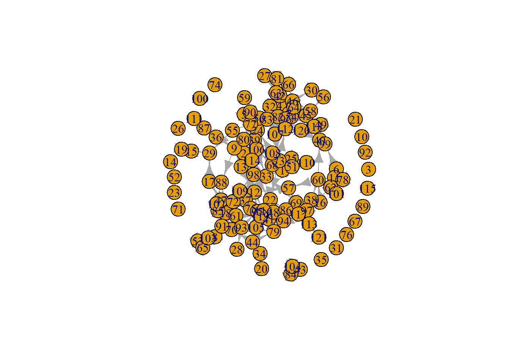

rm(list=ls())
load("./data/IndividualCharacteristics.RData")
load("./data/NetworkCharacteristics.RData")
packages <- c("sna","tidyverse","haven", "igraph")
lapply(packages, require, character.only=T)
## [[1]]
## [1] TRUE
##
## [[2]]
## [1] TRUE
##
## [[3]]
## [1] TRUE
##
## [[4]]
## [1] TRUE
Creating the
Network
#hanging networks
hanging_df_t1 <- as.data.frame(hanging[[1]][1])
hanging_df_t2 <- as.data.frame(hanging[[1]][2])
hangingt2nona <- hanging_df_t2
hangingt2nona[hangingt2nona==9]<- 0
hangingt2nona <- as.matrix(hangingt2nona)
hangingt2 <- graph_from_adjacency_matrix(hangingt2nona, mode = "directed", weighted = NULL, diag = TRUE, add.colnames = NA, add.rownames = NA)
plot(hangingt2)

Making the
Variables
# Parental education
parentedu_df <- as.data.frame(parentedu[[1]])
parentedu_df$w1p1nona <- ifelse(is.na(parentedu_df$W1PAR1EDU), parentedu_df$W2PAR1EDU,
parentedu_df$W1PAR1EDU)
parentedu_df$w2p1nona <- ifelse(is.na(parentedu_df$W2PAR1EDU), parentedu_df$W1PAR1EDU,
parentedu_df$W2PAR1EDU)
parentedu_df$w1p2nona <- ifelse(is.na(parentedu_df$W1PAR2EDU), parentedu_df$W2PAR2EDU,
parentedu_df$W1PAR2EDU)
parentedu_df$w2p2nona <- ifelse(is.na(parentedu_df$W2PAR2EDU), parentedu_df$W1PAR2EDU,
parentedu_df$W2PAR2EDU)
##to account for change in reported parental education level:
parentedu_df$p1nona <- (parentedu_df$w1p1nona + parentedu_df$w2p1nona)/2
parentedu_df$p1nonabin <- ifelse(parentedu_df$p1nona > 6, 1, 0)
parentedu_df$p2nona <- (parentedu_df$w1p2nona + parentedu_df$w2p2nona)/2
parentedu_df$p2nonabin <- ifelse(parentedu_df$p2nona > 6, 1, 0)
#highest par edu
parentedu_df$highparedu <- ifelse(is.na(parentedu_df$p1nona), parentedu_df$p2nona,
ifelse(is.na(parentedu_df$p2nona), parentedu_df$p1nona,
ifelse(parentedu_df$p1nona > parentedu_df$p2nona, parentedu_df$p1nona, parentedu_df$p2nona)))
parentedu_df$parhighedu <- ifelse(parentedu_df$highparedu > 6, 1, 0)
parenteduhigh <- dplyr::select(parentedu_df, parhighedu)
parenteduhigh <- as.vector(parenteduhigh$parhighedu)
# Difference in parents' educational levels
parentedu_df$pardiffedu <- ifelse(parentedu_df$p1nonabin == parentedu_df$p2nonabin, 0, 1)
parentedudif <- dplyr::select(parentedu_df, pardiffedu)
parentedudif <- as.vector(parentedudif$pardiffedu)
#parentedu_df$pardiffedu <- abs(parentedu_df$p1nona - parentedu_df$p2nona)
#summary(parentedu_df$pardiffedu)
#parentedudif <- dplyr::select(parentedu_df, pardiffedu)
#parentedudif <- as.vector(parentedudif$pardiffedu)
##Not sure if I'll use this: binary big difference vs not big difference
#parentedu_nona <- droplevels(parentedu_df[-which(is.na(parentedu_df$pardiffedu) == TRUE),])
#densityPlot(parentedu_nona$pardiffedu)
#sd(parentedu_df$pardiffedu, na.rm = TRUE)
#parentedu_df$diffedubin <- ifelse(is.na(parentedu_df$pardiffedu), NA, ifelse(parentedu_df$pardiffedu < 3, 0, 1))
#parentedu_df$diffedubin <- as.factor(parentedu_df$diffedubin)
#summary(parentedu_df$diffedubin)
# Average parental educational level
#parentedu_df$parent1ifnone <- ifelse(is.na(parentedu_df$p1nona), parentedu_df$p2nona,
# parentedu_df$p1nona)
#parentedu_df$parent2ifnone <- ifelse(is.na(parentedu_df$p2nona), parentedu_df$p1nona,
# parentedu_df$p2nona)
#parentedu_df$parenteduav <- (parentedu_df$parent1ifnone + parentedu_df$parent2ifnone)/2
#parenteduav <- dplyr::select(parentedu_df, parenteduav)
#parenteduav$parenteduav <- scale(parenteduav$parenteduav): check with Jochem
#parenteduav <- as.vector(parenteduav$parenteduav)
#ethnicity
ethcomp <- as.data.frame(ethnic)
ethcomp$ethnicity <- ifelse(is.na(ethcomp$T1ETHNICITY), ethcomp$T2ETHNICITY, ethcomp$T1ETHNICITY)
ethnew <- dplyr::select(ethcomp, ethnicity)
ethnew <- as.numeric(ethnew$ethnicity)
ethnew <- as.vector(ethnew)
#gender
gendernew <- as.data.frame(gender)
gendernew$gender <- ifelse(is.na(gendernew$T1GENDER), gendernew$T2GENDER, gendernew$T1GENDER)
gendernew <- dplyr::select(gendernew, gender)
gendernew <- as.numeric(gendernew$gender)
gendernew <- as.vector(gendernew)
#save everything
save(hanging_df_t1, hanging_df_t2, parentedudif, parenteduhigh, ethnew, gendernew, studentids, file = "./data/EduBridgeforRSiena.RData")
#check colinearity
#require(lattice)
#xyplot(parenteduav ~ parentedudif)
LS0tDQp0aXRsZTogIkRhdGFDb25zdHJ1Y3QyIg0KYXV0aG9yOiAiU3VzYW5uYSINCmRhdGU6ICIyMDI2LTEwLTA3Ig0Kb3V0cHV0OiBodG1sX2RvY3VtZW50DQotLS0NCmBgYHtyIHNldHVwLCBpbmNsdWRlPUZBTFNFfQ0Ka25pdHI6Om9wdHNfY2h1bmskc2V0KGVjaG8gPSBUUlVFKQ0KYGBgDQoNCmBgYHtyIGtsaXBweSwgZWNobz1GQUxTRSwgaW5jbHVkZT1UUlVFfQ0Ka2xpcHB5OjprbGlwcHkocG9zaXRpb24gPSBjKCd0b3AnLCAncmlnaHQnKSkNCiNrbGlwcHk6OmtsaXBweShjb2xvciA9ICdkYXJrcmVkJykNCiNrbGlwcHk6OmtsaXBweSh0b29sdGlwX21lc3NhZ2UgPSAnQ2xpY2sgdG8gY29weScsIHRvb2x0aXBfc3VjY2VzcyA9ICdEb25lJykNCmBgYA0KDQpgYGB7cn0NCnJtKGxpc3Q9bHMoKSkNCmxvYWQoIi4vZGF0YS9JbmRpdmlkdWFsQ2hhcmFjdGVyaXN0aWNzLlJEYXRhIikNCmxvYWQoIi4vZGF0YS9OZXR3b3JrQ2hhcmFjdGVyaXN0aWNzLlJEYXRhIikNCnBhY2thZ2VzIDwtIGMoInNuYSIsInRpZHl2ZXJzZSIsImhhdmVuIiwgImlncmFwaCIpDQpsYXBwbHkocGFja2FnZXMsIHJlcXVpcmUsIGNoYXJhY3Rlci5vbmx5PVQpDQpgYGANCiMgQ3JlYXRpbmcgdGhlIE5ldHdvcmsNCg0KYGBge3J9DQojaGFuZ2luZyBuZXR3b3Jrcw0KaGFuZ2luZ19kZl90MSA8LSBhcy5kYXRhLmZyYW1lKGhhbmdpbmdbWzFdXVsxXSkNCmhhbmdpbmdfZGZfdDIgPC0gYXMuZGF0YS5mcmFtZShoYW5naW5nW1sxXV1bMl0pDQpgYGANCg0KYGBge3J9DQpoYW5naW5ndDJub25hIDwtIGhhbmdpbmdfZGZfdDINCmhhbmdpbmd0Mm5vbmFbaGFuZ2luZ3Qybm9uYT09OV08LSAwDQpoYW5naW5ndDJub25hIDwtIGFzLm1hdHJpeChoYW5naW5ndDJub25hKQ0KDQoNCmhhbmdpbmd0MiA8LSBncmFwaF9mcm9tX2FkamFjZW5jeV9tYXRyaXgoaGFuZ2luZ3Qybm9uYSwgbW9kZSA9ICJkaXJlY3RlZCIsIHdlaWdodGVkID0gTlVMTCwgZGlhZyA9IFRSVUUsIGFkZC5jb2xuYW1lcyA9IE5BLCBhZGQucm93bmFtZXMgPSBOQSkNCnBsb3QoaGFuZ2luZ3QyKQ0KYGBgDQoNCiMgTWFraW5nIHRoZSBWYXJpYWJsZXMNCg0KYGBge3J9DQojIFBhcmVudGFsIGVkdWNhdGlvbg0KcGFyZW50ZWR1X2RmIDwtIGFzLmRhdGEuZnJhbWUocGFyZW50ZWR1W1sxXV0pDQpwYXJlbnRlZHVfZGYkdzFwMW5vbmEgPC0gaWZlbHNlKGlzLm5hKHBhcmVudGVkdV9kZiRXMVBBUjFFRFUpLCBwYXJlbnRlZHVfZGYkVzJQQVIxRURVLA0KICAgICAgICAgICAgICAgICAgICAgICAgICAgICAgICBwYXJlbnRlZHVfZGYkVzFQQVIxRURVKQ0KcGFyZW50ZWR1X2RmJHcycDFub25hIDwtIGlmZWxzZShpcy5uYShwYXJlbnRlZHVfZGYkVzJQQVIxRURVKSwgcGFyZW50ZWR1X2RmJFcxUEFSMUVEVSwNCiAgICAgICAgICAgICAgICAgICAgICAgICAgICAgICAgcGFyZW50ZWR1X2RmJFcyUEFSMUVEVSkNCnBhcmVudGVkdV9kZiR3MXAybm9uYSA8LSBpZmVsc2UoaXMubmEocGFyZW50ZWR1X2RmJFcxUEFSMkVEVSksIHBhcmVudGVkdV9kZiRXMlBBUjJFRFUsDQogICAgICAgICAgICAgICAgICAgICAgICAgICAgICAgIHBhcmVudGVkdV9kZiRXMVBBUjJFRFUpDQpwYXJlbnRlZHVfZGYkdzJwMm5vbmEgPC0gaWZlbHNlKGlzLm5hKHBhcmVudGVkdV9kZiRXMlBBUjJFRFUpLCBwYXJlbnRlZHVfZGYkVzFQQVIyRURVLA0KICAgICAgICAgICAgICAgICAgICAgICAgICAgICAgICBwYXJlbnRlZHVfZGYkVzJQQVIyRURVKQ0KIyN0byBhY2NvdW50IGZvciBjaGFuZ2UgaW4gcmVwb3J0ZWQgcGFyZW50YWwgZWR1Y2F0aW9uIGxldmVsOg0KcGFyZW50ZWR1X2RmJHAxbm9uYSA8LSAocGFyZW50ZWR1X2RmJHcxcDFub25hICsgcGFyZW50ZWR1X2RmJHcycDFub25hKS8yDQpwYXJlbnRlZHVfZGYkcDFub25hYmluIDwtIGlmZWxzZShwYXJlbnRlZHVfZGYkcDFub25hID4gNiwgMSwgMCkNCnBhcmVudGVkdV9kZiRwMm5vbmEgPC0gKHBhcmVudGVkdV9kZiR3MXAybm9uYSArIHBhcmVudGVkdV9kZiR3MnAybm9uYSkvMg0KcGFyZW50ZWR1X2RmJHAybm9uYWJpbiA8LSBpZmVsc2UocGFyZW50ZWR1X2RmJHAybm9uYSA+IDYsIDEsIDApDQoNCiNoaWdoZXN0IHBhciBlZHUNCnBhcmVudGVkdV9kZiRoaWdocGFyZWR1IDwtIGlmZWxzZShpcy5uYShwYXJlbnRlZHVfZGYkcDFub25hKSwgcGFyZW50ZWR1X2RmJHAybm9uYSwNCiAgICAgICAgICAgICAgICAgICAgICAgICAgICBpZmVsc2UoaXMubmEocGFyZW50ZWR1X2RmJHAybm9uYSksIHBhcmVudGVkdV9kZiRwMW5vbmEsDQogICAgICAgICAgICAgICAgICAgICAgICAgICAgaWZlbHNlKHBhcmVudGVkdV9kZiRwMW5vbmEgPiBwYXJlbnRlZHVfZGYkcDJub25hLCBwYXJlbnRlZHVfZGYkcDFub25hLCBwYXJlbnRlZHVfZGYkcDJub25hKSkpDQpwYXJlbnRlZHVfZGYkcGFyaGlnaGVkdSA8LSBpZmVsc2UocGFyZW50ZWR1X2RmJGhpZ2hwYXJlZHUgPiA2LCAxLCAwKQ0KcGFyZW50ZWR1aGlnaCA8LSBkcGx5cjo6c2VsZWN0KHBhcmVudGVkdV9kZiwgcGFyaGlnaGVkdSkNCnBhcmVudGVkdWhpZ2ggPC0gYXMudmVjdG9yKHBhcmVudGVkdWhpZ2gkcGFyaGlnaGVkdSkNCg0KIyBEaWZmZXJlbmNlIGluIHBhcmVudHMnIGVkdWNhdGlvbmFsIGxldmVscw0KcGFyZW50ZWR1X2RmJHBhcmRpZmZlZHUgPC0gaWZlbHNlKHBhcmVudGVkdV9kZiRwMW5vbmFiaW4gPT0gcGFyZW50ZWR1X2RmJHAybm9uYWJpbiwgMCwgMSkNCnBhcmVudGVkdWRpZiA8LSBkcGx5cjo6c2VsZWN0KHBhcmVudGVkdV9kZiwgcGFyZGlmZmVkdSkNCnBhcmVudGVkdWRpZiA8LSBhcy52ZWN0b3IocGFyZW50ZWR1ZGlmJHBhcmRpZmZlZHUpDQoNCiNwYXJlbnRlZHVfZGYkcGFyZGlmZmVkdSA8LSBhYnMocGFyZW50ZWR1X2RmJHAxbm9uYSAtIHBhcmVudGVkdV9kZiRwMm5vbmEpDQojc3VtbWFyeShwYXJlbnRlZHVfZGYkcGFyZGlmZmVkdSkNCiNwYXJlbnRlZHVkaWYgPC0gZHBseXI6OnNlbGVjdChwYXJlbnRlZHVfZGYsIHBhcmRpZmZlZHUpDQojcGFyZW50ZWR1ZGlmIDwtIGFzLnZlY3RvcihwYXJlbnRlZHVkaWYkcGFyZGlmZmVkdSkNCg0KIyNOb3Qgc3VyZSBpZiBJJ2xsIHVzZSB0aGlzOiBiaW5hcnkgYmlnIGRpZmZlcmVuY2UgdnMgbm90IGJpZyBkaWZmZXJlbmNlDQojcGFyZW50ZWR1X25vbmEgPC0gZHJvcGxldmVscyhwYXJlbnRlZHVfZGZbLXdoaWNoKGlzLm5hKHBhcmVudGVkdV9kZiRwYXJkaWZmZWR1KSA9PSBUUlVFKSxdKQ0KI2RlbnNpdHlQbG90KHBhcmVudGVkdV9ub25hJHBhcmRpZmZlZHUpDQojc2QocGFyZW50ZWR1X2RmJHBhcmRpZmZlZHUsIG5hLnJtID0gVFJVRSkNCiNwYXJlbnRlZHVfZGYkZGlmZmVkdWJpbiA8LSBpZmVsc2UoaXMubmEocGFyZW50ZWR1X2RmJHBhcmRpZmZlZHUpLCBOQSwgaWZlbHNlKHBhcmVudGVkdV9kZiRwYXJkaWZmZWR1IDwgMywgMCwgMSkpDQojcGFyZW50ZWR1X2RmJGRpZmZlZHViaW4gPC0gYXMuZmFjdG9yKHBhcmVudGVkdV9kZiRkaWZmZWR1YmluKQ0KI3N1bW1hcnkocGFyZW50ZWR1X2RmJGRpZmZlZHViaW4pDQoNCiMgQXZlcmFnZSBwYXJlbnRhbCBlZHVjYXRpb25hbCBsZXZlbA0KI3BhcmVudGVkdV9kZiRwYXJlbnQxaWZub25lIDwtIGlmZWxzZShpcy5uYShwYXJlbnRlZHVfZGYkcDFub25hKSwgcGFyZW50ZWR1X2RmJHAybm9uYSwNCiMgICAgICAgICAgICAgICAgICAgICAgICAgICAgICAgICAgIHBhcmVudGVkdV9kZiRwMW5vbmEpDQojcGFyZW50ZWR1X2RmJHBhcmVudDJpZm5vbmUgPC0gaWZlbHNlKGlzLm5hKHBhcmVudGVkdV9kZiRwMm5vbmEpLCBwYXJlbnRlZHVfZGYkcDFub25hLA0KIyAgICAgICAgICAgICAgICAgICAgICAgICAgICAgICAgICAgcGFyZW50ZWR1X2RmJHAybm9uYSkNCiNwYXJlbnRlZHVfZGYkcGFyZW50ZWR1YXYgPC0gKHBhcmVudGVkdV9kZiRwYXJlbnQxaWZub25lICsgcGFyZW50ZWR1X2RmJHBhcmVudDJpZm5vbmUpLzINCiNwYXJlbnRlZHVhdiA8LSBkcGx5cjo6c2VsZWN0KHBhcmVudGVkdV9kZiwgcGFyZW50ZWR1YXYpDQojcGFyZW50ZWR1YXYkcGFyZW50ZWR1YXYgPC0gc2NhbGUocGFyZW50ZWR1YXYkcGFyZW50ZWR1YXYpOiBjaGVjayB3aXRoIEpvY2hlbQ0KI3BhcmVudGVkdWF2IDwtIGFzLnZlY3RvcihwYXJlbnRlZHVhdiRwYXJlbnRlZHVhdikNCg0KDQojZXRobmljaXR5DQpldGhjb21wIDwtIGFzLmRhdGEuZnJhbWUoZXRobmljKQ0KZXRoY29tcCRldGhuaWNpdHkgPC0gaWZlbHNlKGlzLm5hKGV0aGNvbXAkVDFFVEhOSUNJVFkpLCBldGhjb21wJFQyRVRITklDSVRZLCBldGhjb21wJFQxRVRITklDSVRZKQ0KZXRobmV3IDwtIGRwbHlyOjpzZWxlY3QoZXRoY29tcCwgZXRobmljaXR5KQ0KZXRobmV3IDwtIGFzLm51bWVyaWMoZXRobmV3JGV0aG5pY2l0eSkNCmV0aG5ldyA8LSBhcy52ZWN0b3IoZXRobmV3KQ0KDQojZ2VuZGVyDQpnZW5kZXJuZXcgPC0gYXMuZGF0YS5mcmFtZShnZW5kZXIpDQpnZW5kZXJuZXckZ2VuZGVyIDwtIGlmZWxzZShpcy5uYShnZW5kZXJuZXckVDFHRU5ERVIpLCBnZW5kZXJuZXckVDJHRU5ERVIsIGdlbmRlcm5ldyRUMUdFTkRFUikNCmdlbmRlcm5ldyA8LSBkcGx5cjo6c2VsZWN0KGdlbmRlcm5ldywgZ2VuZGVyKQ0KZ2VuZGVybmV3IDwtIGFzLm51bWVyaWMoZ2VuZGVybmV3JGdlbmRlcikNCmdlbmRlcm5ldyA8LSBhcy52ZWN0b3IoZ2VuZGVybmV3KQ0KYGBgDQpgYGB7cn0NCiNzYXZlIGV2ZXJ5dGhpbmcNCnNhdmUoaGFuZ2luZ19kZl90MSwgaGFuZ2luZ19kZl90MiwgcGFyZW50ZWR1ZGlmLCBwYXJlbnRlZHVoaWdoLCBldGhuZXcsIGdlbmRlcm5ldywgc3R1ZGVudGlkcywgZmlsZSA9ICIuL2RhdGEvRWR1QnJpZGdlZm9yUlNpZW5hLlJEYXRhIikNCmBgYA0KDQpgYGB7cn0NCiNjaGVjayBjb2xpbmVhcml0eQ0KI3JlcXVpcmUobGF0dGljZSkNCiN4eXBsb3QocGFyZW50ZWR1YXYgfiBwYXJlbnRlZHVkaWYpDQpgYGANCg==